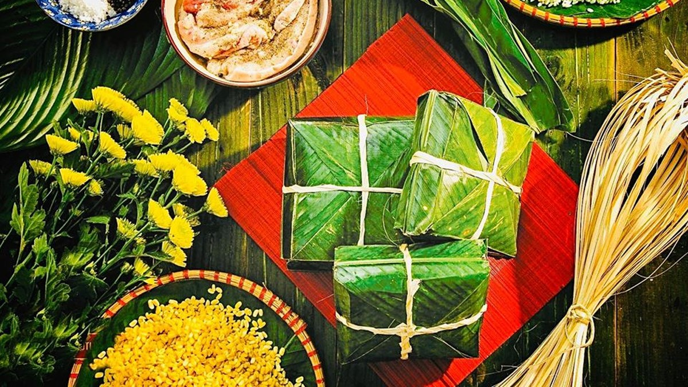

1. Giai điệu rộn ràng ngày Tết
🎶 Giai điệu mùa xuân 1
🎶 Giai điệu mùa xuân 2
2. Ý nghĩa văn hóa Tết Nguyên Đán
Tết Nguyên Đán (hay còn gọi là Tết Cả, Tết Ta, Tết Âm lịch) là dịp lễ quan trọng và thiêng liêng nhất trong năm của dân tộc Việt Nam. Đây không chỉ là thời khắc chuyển giao giữa năm cũ và năm mới, mà còn là dịp để mỗi người con đất Việt hướng về cội nguồn, tưởng nhớ tổ tiên và sum họp bên gia đình.
Từ những ngày cuối tháng Chạp, khắp mọi miền Tổ quốc đều rộn ràng không khí chuẩn bị đón xuân. Người dân dọn dẹp, trang hoàng nhà cửa, sắm sửa mâm ngũ quả và gói những chiếc bánh chưng xanh, bánh tét đậm đà hương vị truyền thống. Phong tục lì xì đầu năm, chúc Tết ông bà và đi lễ chùa cầu bình an đã trở thành nét đẹp nhân văn sâu sắc, gắn kết tình thân và gửi gắm ước vọng về một năm mới An Khang – Thịnh Vượng – Vạn Sự Như Ý.
3. Các mốc thời gian & phong tục tiêu biểu
| Thời gian | Tên gọi | Hoạt động truyền thống |
|---|---|---|
| 23 tháng Chạp | Lễ cúng Ông Công Ông Táo | Dọn dẹp bếp núc, tiễn Táo Quân về trời báo cáo việc năm cũ. |
| Đêm 30 Tết | Lễ Trừ Tịch (Giao thừa) | Cúng giao thừa, đón thời khắc chuyển giao năm mới, hái lộc đầu xuân. |
| Mùng 1 – Mùng 3 | Tết Cha, Tết Mẹ, Tết Thầy | Chúc Tết ông bà, cha mẹ, thầy cô; mừng tuổi (lì xì) lấy may đầu năm. |
4. Hình ảnh biểu tượng ngày Tết Việt

5. Video không khí & sắc xuân ngày Tết
Video 1: Không khí rộn ràng chuẩn bị đón Tết cổ truyền.
Video 2: Sắc hoa mùa xuân tươi thắm trên khắp mọi miền.
6. Góc tương tác: Hái lộc lời chúc đầu năm
Nhấn vào bao lì xì bên dưới để nhận lời chúc may mắn đầu năm dành riêng cho bạn!
7. Liên kết tìm hiểu thêm về Tết Việt Nam
- 📖 Tìm hiểu lịch sử & phong tục: Bách khoa toàn thư mở Wikipedia - Tết Nguyên Đán
- 🏛️ Khám phá văn hóa & lễ hội Việt Nam: Cổng thông tin điện tử Bộ Văn hóa, Thể thao và Du lịch